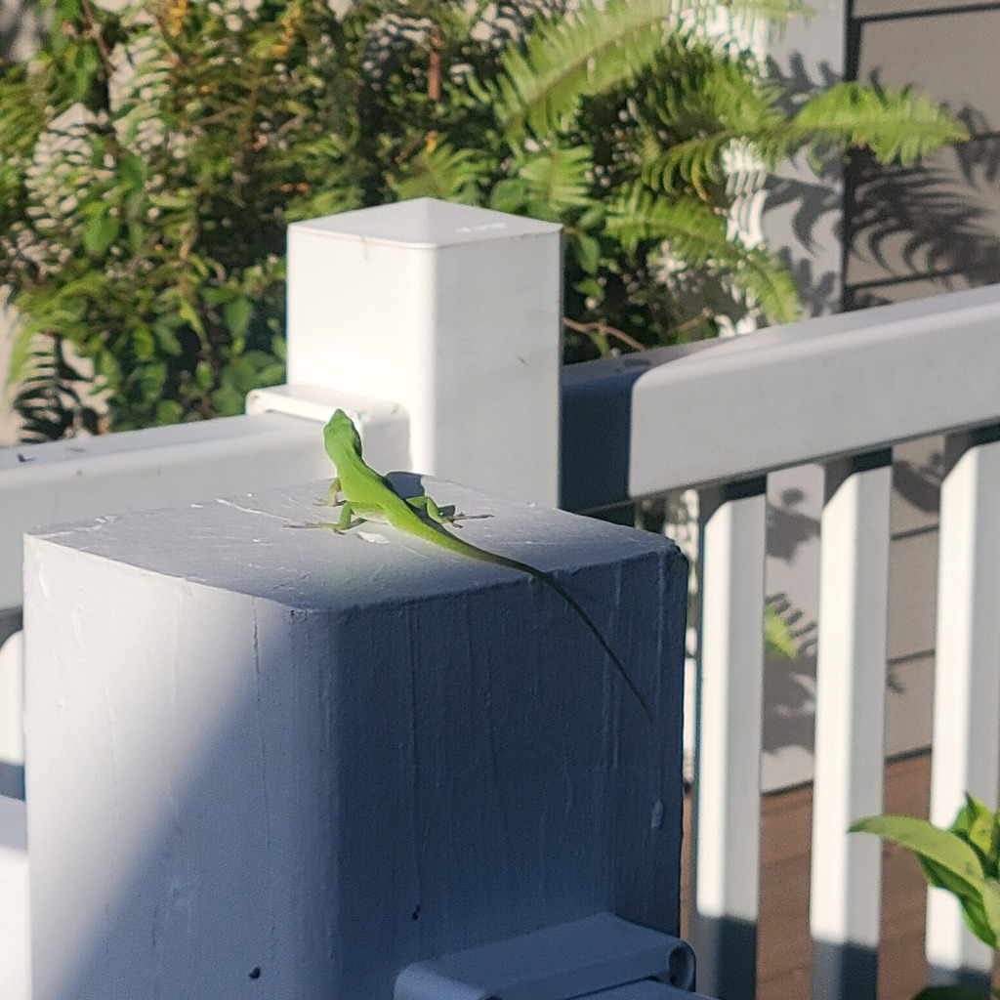

- A slender lizard that can shift from bright green to brown, flashing a pink throat fan, is the green anole — Florida's only native anole.
- Despite the color-changing, it is not a chameleon. It switches between green and brown with mood and temperature, not to match its background.
- It has been quietly pushed upward. Since the brown anole arrived from the Caribbean, green anoles spend more time high in shrubs and trees, out of the newcomer's way.
- That pressure is driving fast change: green anoles on brown-anole turf have been measured evolving larger, stickier toepads for gripping higher, smoother perches.
Bright green to brown, able to switch between the two; the only local anole that turns true green.
Males flash a pink dewlap during displays.
Slender, with a long tail and a pointed snout; smoother-scaled than the brown anole.
Often higher up — in shrubs and trees — than the ground-loving brown anole.
Silent. Like other anoles, it communicates with head-bobs and its colorful dewlap rather than sound.
A slim lizard that is bright green (or a green-brown in between), often up in shrubbery, with a pink throat fan in displaying males. The ability to turn true green is the clincher — the brown anole never can.
Small insects and other invertebrates — flies, beetles, spiders, crickets, and the like — caught by day among leaves and branches.
Up in the shrubbery and on tree trunks and vines, a step higher than the brown anoles on the fences and ground. Look for a green lizard with a pink throat fan.
Year-round resident, most active and most often green on warm, sunny days.
Just watch and enjoy. No need to handle them — and leaving shrubby cover in the garden is the best way to help the natives hold their ground.
- © Jenny Gunter (CC-BY-NC), via iNaturalist